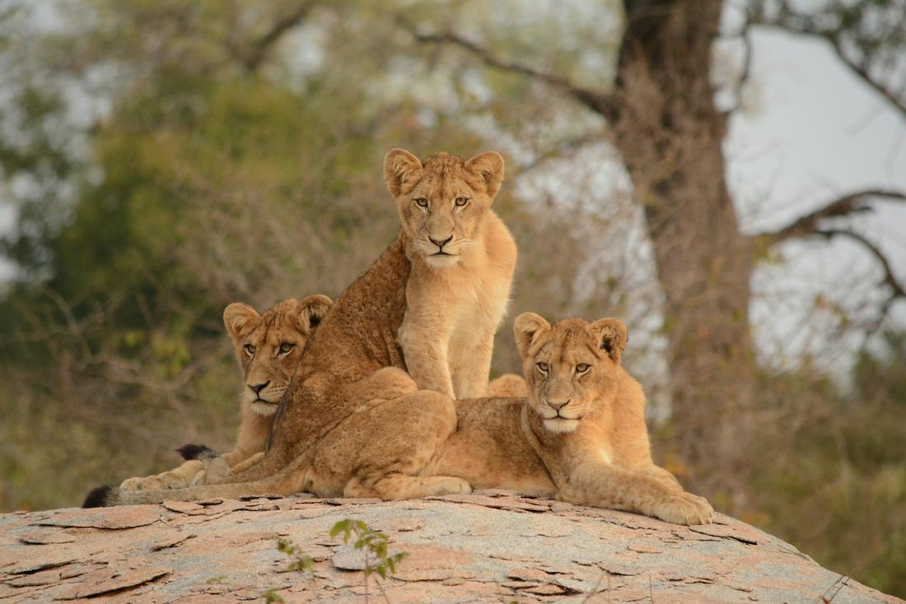
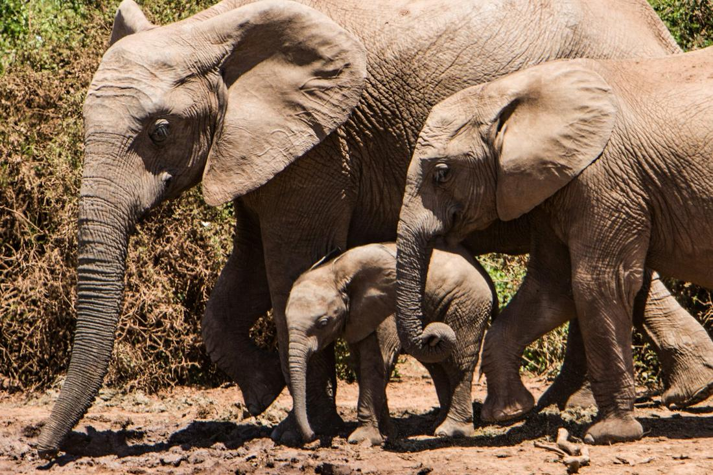

Big Five safaris, Cape Town coastlines, and world-class wine country, all in one trip.
South Africa is the one country I recommend when a client tells me they want it all - wildlife, wine, mountains, and coastline - without needing three separate vacations to get there. In a single trip, you can watch a lioness and her cubs stretch awake at sunrise on a game drive, then sip a glass of Cabernet Sauvignon on a vineyard terrace that same afternoon. Few destinations on earth let you shift gears that dramatically, and that contrast is exactly what makes South Africa so addictive for first-time and repeat travelers alike.
As your travel advisor, I love this country because it rewards every kind of traveler. Honeymooners fall for the boutique lodges tucked into the Cape Winelands. Adventure seekers get their fix hiking Table Mountain or bungee jumping off the Bloukrans Bridge. Multi-generational families find a sweet spot in Kruger, where kids and grandparents alike are equally mesmerized by an elephant crossing the road in front of the safari vehicle. And photographers - well, between the penguins at Boulders Beach and golden-hour light on the savanna, you'll fill your camera roll fast.
The trick with South Africa is sequencing it right so you're not spending your whole vacation on internal flights and long drives. That's where I come in. Here are three excursions I love arranging for my clients, each one built around the real, iconic experiences this country is famous for.

This is the package I build for clients who want Cape Town's greatest hits woven into one seamless few days, rather than pieced together on their own. We start with the Table Mountain Aerial Cableway, rotating slowly as it climbs so you get a 360-degree view of the city, Table Bay, and the Atlantic seaboard before you even step off. From there we head down the peninsula to Cape Point and the Cape of Good Hope, where dramatic cliffs meet crashing surf at the tip of Africa, with a stop at Boulders Beach so you can walk the boardwalk right alongside a colony of African penguins waddling across the sand. Then we shift the pace entirely and head inland to the Cape Winelands, where Stellenbosch's oak-lined streets and Cape Dutch architecture set the scene for an afternoon of tasting through Pinotage and Chenin Blanc, followed by a long, unhurried lunch at a Franschhoek estate with mountains on every side. It's the kind of day - or two - that shows you why Cape Town keeps winning 'best city in the world' awards, without ever feeling rushed or overplanned. I map out the driving order myself so the light, the crowds, and the reservations all line up in your favor.

For clients who picture 'South Africa' and think safari first, this is the package that delivers. We base you either inside Kruger National Park itself or in one of the private reserves along its unfenced western boundary, like Sabi Sands or Timbavati, where the same wildlife roams but the vehicle-to-guest ratio is smaller and off-road driving is allowed - meaning your ranger can get you closer to a pride of lions than public roads ever could. Days follow the safari rhythm I love: an early wake-up call, coffee in hand as you head out while the bush is still cool and animals are most active, a mid-morning break for a full breakfast back at the lodge, free time by the pool through the heat of the day, then a sunset drive that turns into a Big Five happy hour - sundowners poured on the hood of the truck while the sky goes orange over the mopane trees. Most evenings end with a boma dinner under the stars, a fire crackling and, more nights than not, a distant lion calling in the dark. This is the trip that makes people tear up a little when they see their first elephant in the wild, and I say that as someone who's watched it happen more than once.

This is the package for clients who want to drive one of the most beautiful coastal routes on the planet, stopping wherever the view (or my recommendation) tells them to. We start in Port Elizabeth or George and wind along the Garden Route through Tsitsikamma, where you can walk the canopy boardwalks through ancient forest or, if you're feeling bold, take the leap off the Bloukrans Bridge on the world's highest bungee jump from a bridge. Knysna's lagoon and its famous Heads make an easy, scenic stop for lunch with a view. Inland, Oudtshoorn is where things get wonderfully strange - you can visit a working ostrich farm and then descend into the dramatic limestone chambers of the Cango Caves. And for many of my clients, the highlight of the whole route is Addo Elephant National Park, where free-ranging herds cross the road in front of your car close enough to hear them breathe, no professional safari vehicle required. I build this itinerary as a self-drive with all the lodging and reservations locked in ahead of time, so you get the freedom of the open road without any of the guesswork.
Prefer to plan together? I'll build your custom package. Already know what you want? Book instantly through my travel portal.